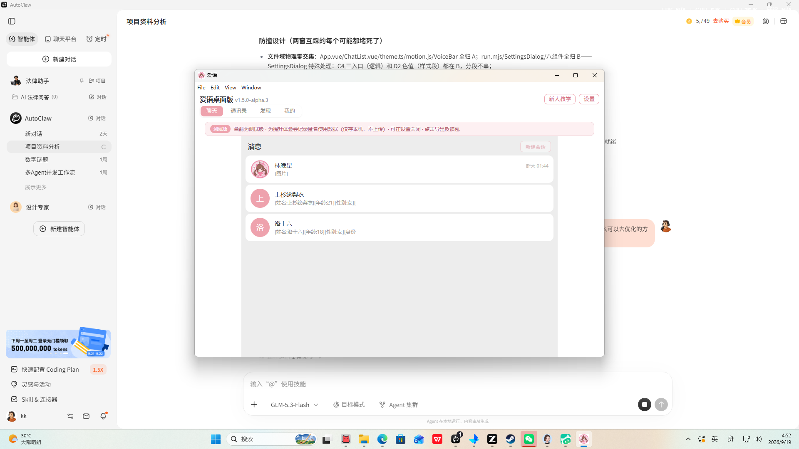
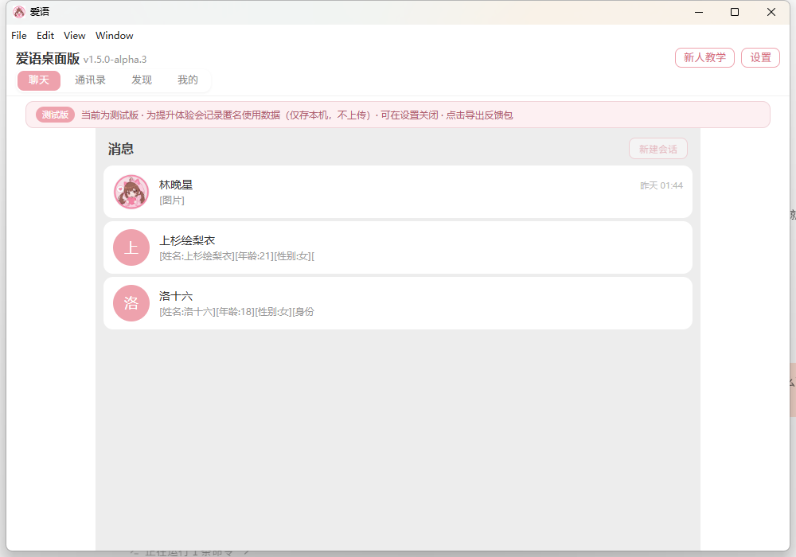
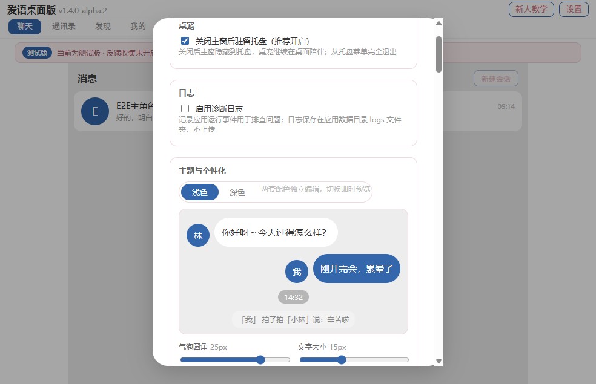
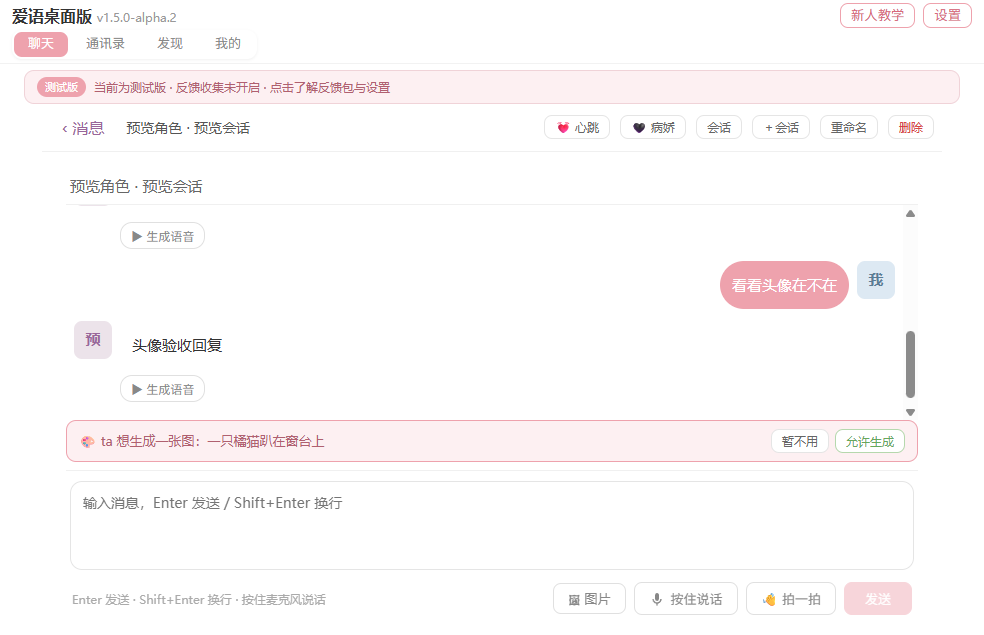

把一个会眨眼的 TA，
放在你的桌面上
爱语是一个 Windows 桌面 AI 陪伴应用：Live2D 桌宠常驻角落，本地记忆让 TA 记得你说过的话， 聊天逐字流式回复——像养了一只安静的小人，而不像在用一个工具。

TA 会什么
活着
桌宠不只是立绘
待机时会眨眼、视线扫视、呼吸起伏；语音播放时嘴巴跟着声音开合。 不说话的时候，TA 也在桌面的角落里待着。
记得
记忆与人格
聊天内容沉淀为本地长期记忆，还有对「你」的认知笔记； 人设可从文件导入，换一个 TA，就换一种性格。
不挑电脑
低配友好
全部动效本地计算，不跑任何本地模型。微动开启后 CPU 增幅实测 +0.013%—— 十年前的老机器 + 核显也能安安静静地陪着。
体贴
动效与主题双轨
系统开启「减弱动态效果」时，动画立即直切不折腾； 深浅主题跟随系统，深夜看屏幕不刺眼。
看一眼



你的话，放在哪
- 聊天与记忆存在本机：会话、记忆、人设都在你电脑的本地数据库里，爱语没有自己的服务器，不做账号体系。
- AI 服务用你自己的钥匙：模型接口与 API Key 由你在设置里自行配置，请求直接发往你选择的服务商。
- 有些功能会看你的屏幕，只在你按下时：「看看屏幕」「识别屏幕文字」都是手动触发，截图只在内存里转述，不落盘。
- 看得见的开关：诊断日志默认关闭，口型、看屏幕等新能力全部默认关闭，想开再开。
带 TA 回家
Windows 安装包（此处预留下载入口）
当前为测试版 v1.5.0-alpha.3，下载入口将在正式发布时开放。